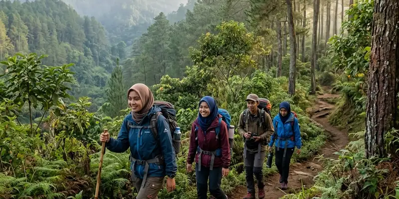

Wisata alam di Batu tidak hanya soal taman hiburan yang ramai. Kota ini juga memiliki air terjun, hutan pinus, bukit, dan kebun yang lebih tenang dan cocok untuk wisatawan yang mencari suasana alam autentik.
Ringkasan Inti
- Batu memiliki banyak destinasi alam selain taman hiburan populer seperti Jatim Park dan BNS.
- Air terjun dan hutan pinus menawarkan suasana sejuk dengan pengunjung yang relatif lebih sedikit.
- Kawasan bukit dan pegunungan cocok untuk aktivitas hiking ringan dan menikmati panorama kota.
- Agrowisata kebun memberikan pengalaman alam sekaligus edukasi bagi keluarga.
- Perencanaan waktu kunjungan memengaruhi tingkat kenyamanan dan kepadatan wisatawan.
Apa Itu Wisata Alam di Batu
Wisata alam di Batu merujuk pada destinasi berbasis lanskap pegunungan, hutan, air terjun, dan kebun yang berada di wilayah Kota Batu, Jawa Timur. Wilayah ini terletak di kaki beberapa gunung, termasuk kompleks Arjuna-Welirang dan Panderman, sehingga secara geografis mendukung keberadaan banyak titik alam yang belum tergarap secara komersial besar-besaran.
Kota Batu secara umum dikenal sebagai kota wisata dengan udara sejuk khas dataran tinggi. Selain wahana buatan seperti Jatim Park, Museum Angkut, dan Batu Night Spectacular yang sudah sangat populer, kawasan ini juga menyimpan banyak titik alam yang masih relatif sepi pengunjung, seperti air terjun tersembunyi, hutan pinus, dan bukit dengan jalur trekking ringan.
Untuk siapa destinasi ini relevan: Wisata alam di Batu cocok bagi wisatawan yang ingin menghindari antrean panjang di destinasi mainstream, keluarga yang mencari suasana tenang, komunitas hiking pemula, hingga fotografer yang mencari lanskap alami tanpa terlalu banyak elemen buatan.
Mengapa Memilih Wisata Alam yang Lebih Sepi di Batu
Wisata alam yang lebih sepi di Batu memberi ruang bagi pengunjung untuk menikmati suasana tanpa harus berdesakan, sekaligus mendukung pemerataan kunjungan ke berbagai desa wisata di sekitar Batu.
Beberapa alasan praktis memilih destinasi alam di luar rute mainstream antara lain suasana yang lebih tenang, harga tiket masuk yang umumnya lebih terjangkau dibandingkan taman hiburan skala besar, serta kesempatan berinteraksi langsung dengan warga desa wisata setempat. Destinasi seperti ini juga cenderung lebih ramah bagi pengunjung yang ingin fotografi lanskap tanpa gangguan keramaian di latar belakang.
Di sisi lain, fasilitas di destinasi alam yang lebih sepi umumnya belum selengkap taman hiburan besar. Akses jalan menuju beberapa lokasi juga dapat lebih menantang, terutama saat musim hujan, sehingga persiapan kendaraan dan alas kaki yang sesuai menjadi penting.
Apa Saja Kategori Wisata Alam di Batu
Kategori wisata alam di Batu dapat dibagi menjadi tiga kelompok utama, yaitu air terjun dan hutan pinus, kawasan bukit dan pegunungan, serta agrowisata kebun yang menawarkan pengalaman alam sekaligus edukasi.
Air terjun dan hutan pinus umumnya berada di lereng gunung dengan akses jalan setapak yang teduh. Beberapa titik air terjun di Batu dikelilingi kawasan hutan pinus yang menambah kesejukan udara di sekitarnya, sekaligus menjadi lokasi favorit untuk berkemah ringan atau glamping.
Kawasan bukit dan pegunungan menjadi pilihan bagi wisatawan yang mencari panorama kota Batu dari ketinggian, termasuk area yang biasa digunakan untuk kegiatan paralayang dan menikmati matahari terbit maupun matahari terbenam.
Agrowisata kebun, seperti kebun petik buah dan kebun teh, memberikan pengalaman alam yang lebih santai dan cocok untuk keluarga dengan anak-anak, karena aktivitasnya lebih terarah dan risikonya relatif rendah dibandingkan trekking di bukit.

Aktivitas trekking menyusuri jalan setapak di tengah rimbunnya pohon pinus menghadirkan udara segar khas dataran tinggi Batu.
Bagaimana Cara Memilih Wisata Alam di Batu Sesuai Kebutuhan
Cara memilih wisata alam di Batu yang tepat bergantung pada tujuan kunjungan, tingkat kebugaran fisik, dan waktu yang tersedia, sehingga pengalaman di lapangan sesuai dengan ekspektasi.
Bagi wisatawan yang membawa anak kecil atau lansia, agrowisata kebun dan area air terjun dengan akses relatif landai umumnya lebih sesuai dibandingkan jalur bukit yang menanjak. Bagi pengunjung yang mencari tantangan fisik ringan, kawasan bukit dengan jalur trekking pendek bisa menjadi pilihan, dengan tetap memperhatikan kondisi cuaca sebelum berangkat.
Waktu kunjungan juga berpengaruh besar terhadap kenyamanan. Kunjungan pada pagi hari di hari kerja umumnya menawarkan suasana lebih sepi dibandingkan akhir pekan atau musim libur panjang, ketika sebagian besar destinasi wisata di Batu mengalami lonjakan pengunjung.
Apa Saja Tips Berkunjung ke Wisata Alam di Batu
Tips berkunjung ke wisata alam di Batu meliputi persiapan fisik, perlengkapan yang sesuai cuaca pegunungan, dan pengecekan akses jalan sebelum berangkat agar perjalanan tetap nyaman dan aman. Beberapa hal praktis yang perlu diperhatikan:
- Kenakan pakaian hangat karena suhu di Batu cenderung sejuk, terutama pada pagi dan malam hari.
- Gunakan alas kaki yang sesuai untuk medan berbatu atau tanah basah, terutama di area air terjun dan hutan pinus.
- Bawa air minum dan bekal ringan karena tidak semua destinasi alam memiliki warung di dekat lokasi utama.
- Periksa perkiraan cuaca sebelum berangkat, terutama saat musim hujan, karena beberapa jalur bisa menjadi licin.
- Datang lebih pagi untuk menghindari kepadatan, khususnya pada akhir pekan atau musim liburan.
Kesalahan Umum Saat Berwisata Alam di Batu
Kesalahan umum saat berwisata alam di Batu sering terjadi karena kurangnya persiapan fisik dan minimnya informasi mengenai kondisi lokasi, sehingga pengalaman kunjungan menjadi kurang optimal.
Beberapa kesalahan yang sering ditemui antara lain memaksakan diri melewati jalur trekking tanpa persiapan fisik yang memadai, tidak membawa jaket meski suhu Batu bisa cukup dingin, serta datang pada jam ramai tanpa mempertimbangkan waktu kunjungan alternatif. Kesalahan lain adalah mengabaikan rambu keselamatan di area air terjun atau tebing, padahal kondisi alam dapat berubah cepat, terutama saat hujan turun di kawasan pegunungan.
Perbandingan Wisata Alam dan Wisata Buatan di Batu
Wisata alam dan wisata buatan di Batu menawarkan pengalaman yang berbeda, di mana wisata alam menonjolkan lanskap asli, sementara wisata buatan menekankan wahana dan fasilitas hiburan modern.
Wisata buatan seperti taman hiburan dan museum umumnya menawarkan kenyamanan fasilitas, wahana interaktif, dan aktivitas yang terjadwal, namun cenderung lebih ramai terutama pada akhir pekan. Wisata alam, di sisi lain, menonjolkan suasana yang lebih organik dengan interaksi langsung terhadap lanskap pegunungan, hutan, dan kebun, meski fasilitas pendukungnya umumnya lebih sederhana.
Kedua jenis wisata ini sebenarnya saling melengkapi. Banyak wisatawan mengombinasikan kunjungan ke destinasi alam pada pagi hari dengan kunjungan ke taman hiburan pada sore atau malam harinya, sehingga satu hari kunjungan ke Batu dapat mencakup pengalaman yang lebih beragam.
Kesimpulan
Wisata alam di Batu menawarkan alternatif yang lebih tenang dibandingkan destinasi mainstream, mulai dari air terjun dan hutan pinus, kawasan bukit dengan panorama pegunungan, hingga agrowisata kebun yang ramah keluarga. Untuk pengalaman yang lebih mendalam, simak pembahasan lengkap tentang air terjun dan hutan pinus tersembunyi, kawasan bukit dan pegunungan, serta agrowisata kebun di Batu pada artikel cluster terkait.
FAQ Wisata Alam di Batu
Sebagian besar wisata alam di Batu cocok untuk anak-anak, terutama agrowisata kebun dan area air terjun dengan akses landai, namun tetap perlu pengawasan orang tua di area berbatu atau licin.
Waktu terbaik umumnya pagi hari di hari kerja, karena suasana lebih sepi dan cuaca cenderung lebih cerah dibandingkan siang atau menjelang hujan sore.
Kendaraan pribadi umumnya lebih memudahkan akses ke wisata alam di Batu, karena sebagian lokasi berada di kawasan lereng gunung yang belum terjangkau transportasi umum secara menyeluruh.
Harga tiket wisata alam di Batu umumnya lebih terjangkau dibandingkan taman hiburan besar, meski biaya dapat bervariasi tergantung fasilitas tambahan seperti area glamping atau spot foto khusus.
Sebagian besar wisata alam di Batu buka setiap hari, namun jam operasional dan kondisi akses dapat berubah tergantung cuaca dan kebijakan pengelola setempat, sehingga sebaiknya dicek terlebih dahulu sebelum berkunjung.